Getting started
White Board replaces the Excel white board. It counts runs on each tool, keeps the stage count for each well for tickets, and builds the XO notes for crew change.
Install it on the PC (once)
- Open https://borealelinepd.github.io/whiteboard/ in Microsoft Edge.
- Click the green ⬇ Install button at the top.
- In Edge's box, tick Pin to taskbar and Create desktop shortcut, then Allow.
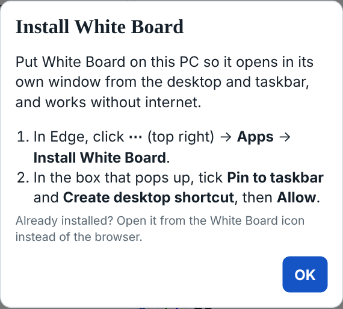
From then on, open White Board from its icon. It opens in its own window and works without internet. Updates arrive on their own the next time it's opened with a connection.
The Days / Nights switch
This is the most important button in the app. It tells White Board which crew is working right now. Yellow ☀ Days means day shift; blue ☾ Nights means night shift.
Every stage you add and every +1 run you press is tagged with the shift that's selected. That's how the Days XO and Nights XO tabs know which stages and runs belong to which crew.
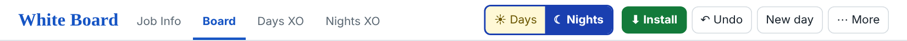
Got a stage on the wrong shift? Tap the stage, Delete it, switch to the right shift, and add it again.
The top bar
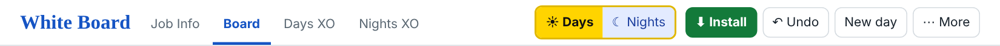
| Button | What it does |
|---|---|
| Job Info · Board · Days XO · Nights XO | The four tabs. The app opens on whichever tab you used last. |
| Days Nights | Current shift. See Days / Nights above. |
| ⬇ Install | Installs White Board on the PC. Hidden once you're using the installed app. |
| ↶ Undo | Takes back the last change. Press again to go back further. Also Ctrl+Z. Undo history is lost when the app is closed. |
| New day | Clears today's stages from the Board at the start of a new ticket day. See Shift routine. |
| ⋯ More | Past days, Backup, Restore, New job and this Help page. See More menu. |
Job Info tab
Fill this in once at the start of a job. It stays until you start a New job.
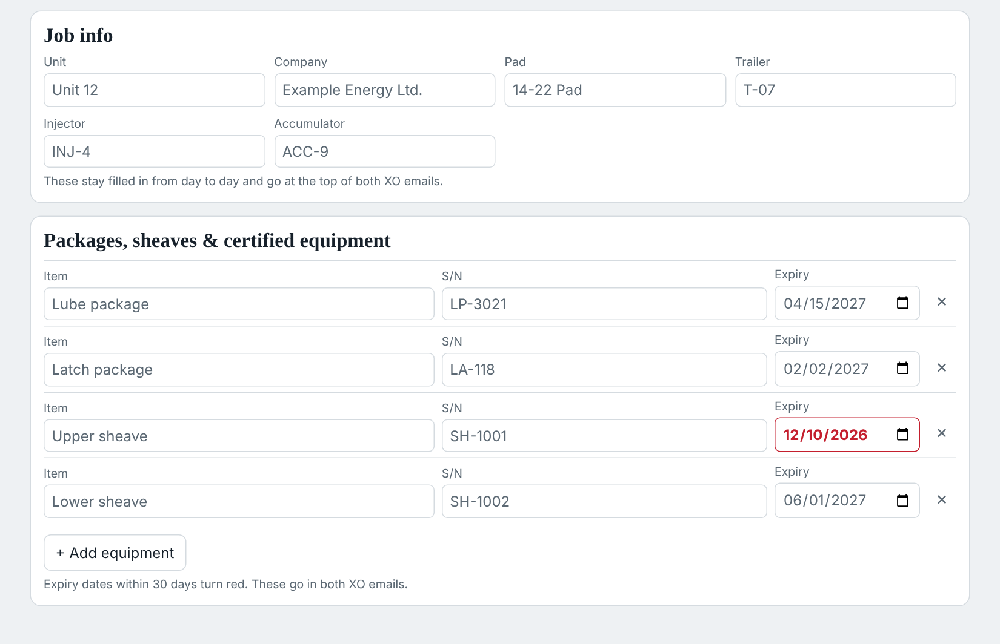
- Unit, Company, Pad make up the email subject, for example "Unit 12 Example Energy Ltd. 14-22 Pad XO Notes".
- Packages, sheaves & certified equipment: S/N and expiry for the lube package, latch package and sheaves. + Add equipment adds a row; ✕ removes one.
- An expiry date within 30 days turns red, here and on the printed XO notes.
- Only items with an S/N or date filled in go on the XO notes.
Board tab
Run counter
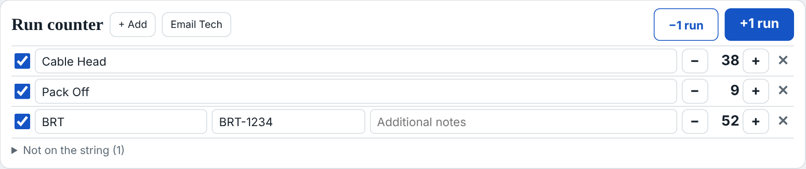
- Ticked items are on the string. +1 run adds one run to every ticked item. −1 run takes one off, for a mistake.
- The − + beside an item change just that item.
- Untick an item to take it off the string. It moves into Not on the string and keeps its count. Click that line to open it and tick the item back on.
- + Add adds equipment (a second BRT, a CCL). Each one except Cable Head and Pack Off gets an S/N and Additional notes. ✕ removes an item.
- Email Tech emails the whole run counter, with S/Ns, run counts and notes, to the tech team. Send it at the end of a job, before New job.
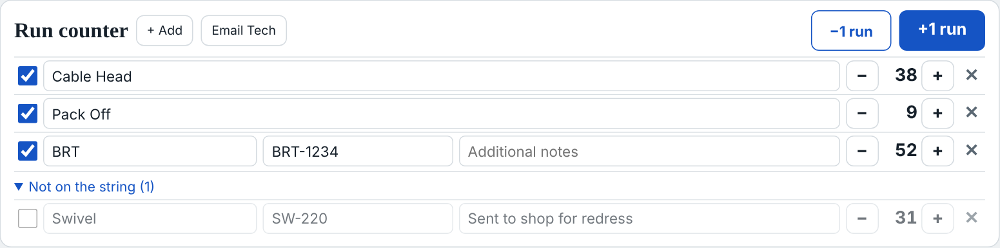
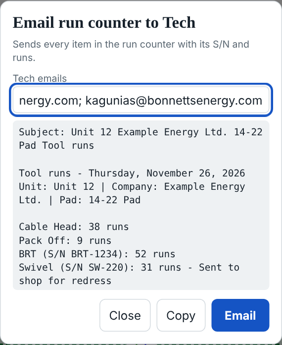
Wells
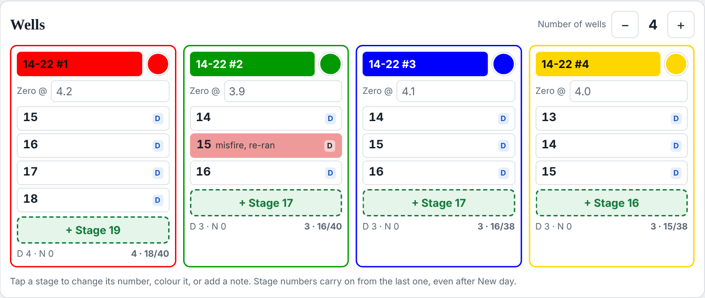
- Number of wells − + sets how many columns there are. Removing a well asks first if it has stages.
- Type the well name at the top of each column, and the Zero @.
- The round button picks the well colour (same colours as the Boreal Notes workbook). The colour shows on the XO notes too.
- + Stage 19 adds the next stage number. Numbers carry on from the last stage, even after New day.
- Reruns: add the rerun as its own stage and change its number to something like 15.1 or 15 rerun. It counts as a stage on the tickets and XO notes. Completed only uses the whole number (15), so Remaining stays a whole number.
- Bottom of each column: Days and Nights stages today, then today's total · completed / total stages.
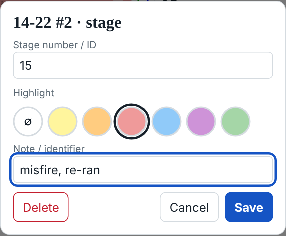
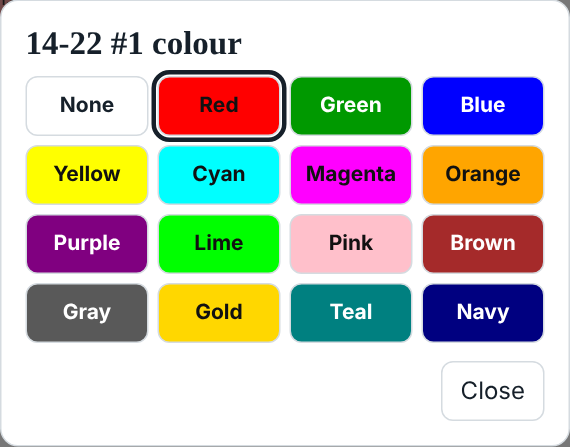
Today's tickets
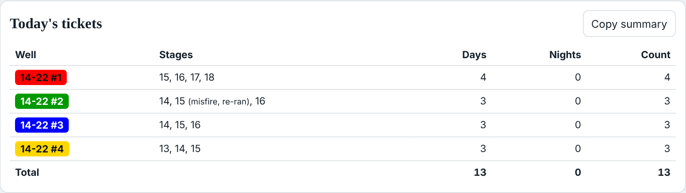
The stage count for the ticket day, split by Days and Nights. Copy summary copies it as text to paste anywhere.
Days XO and Nights XO tabs
Each shift has its own XO notes. They fill in from the Board, so mostly you add the crew, tick the checks and write the operations notes.
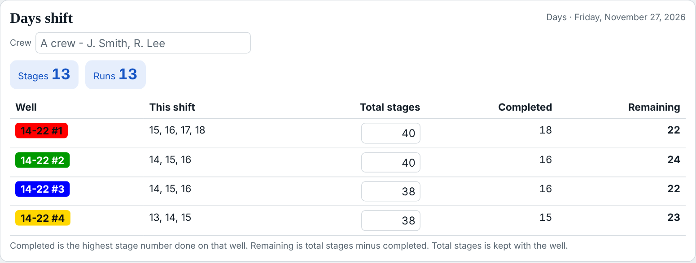
- Crew: each shift keeps its own crew names.
- Stages and Runs: this shift's totals.
- Total stages: type it once per well. Both XO tabs share it.
- Completed is the highest stage number done. Remaining = total stages − completed.
Checks
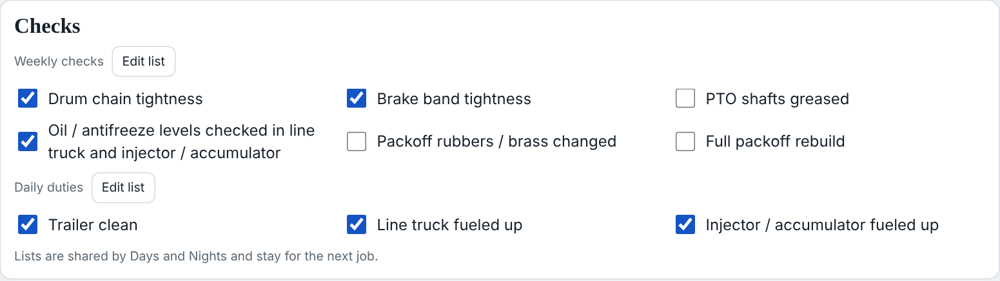
Edit list lets you rename, add or remove tasks. Press Done when finished. Both shifts use the same lists, and they stay for the next job.
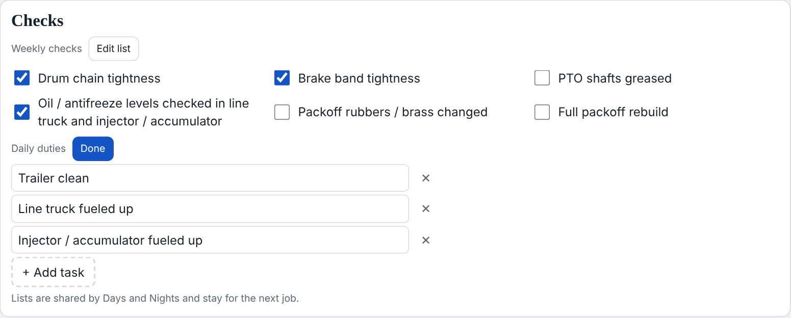
Operations notes and sending
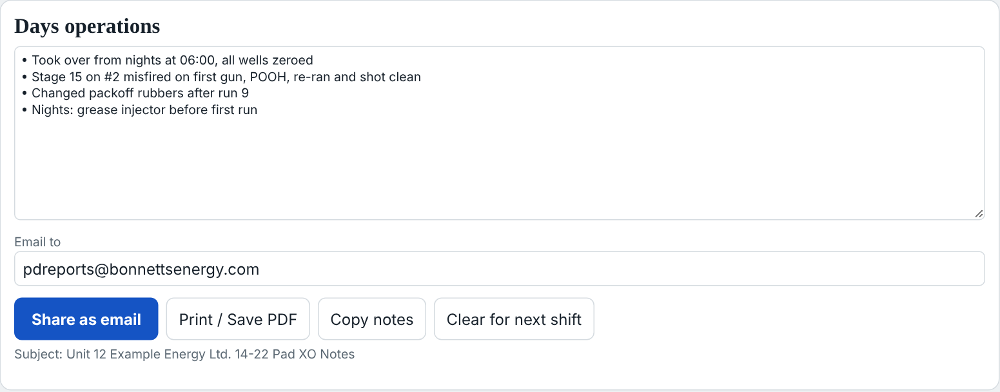
- Notes are bullets. Enter starts a new bullet; Enter on an empty bullet ends the list.
- Email to is filled in with pdreports@bonnettsenergy.com. Add more addresses with ; or ,.
- Share as email opens your email app with the subject and the full notes in the email.
- Print / Save PDF prints the notes on one page with the Boreal logo. To make a PDF, pick Save as PDF or Microsoft Print to PDF as the printer. The file name is already set to the email subject.
- Copy notes copies the notes as text, if the email button doesn't open your email app.
- Clear for next shift resets this tab's stages, runs, checks and operations notes. Crew, job info, the Board and the other shift aren't touched.
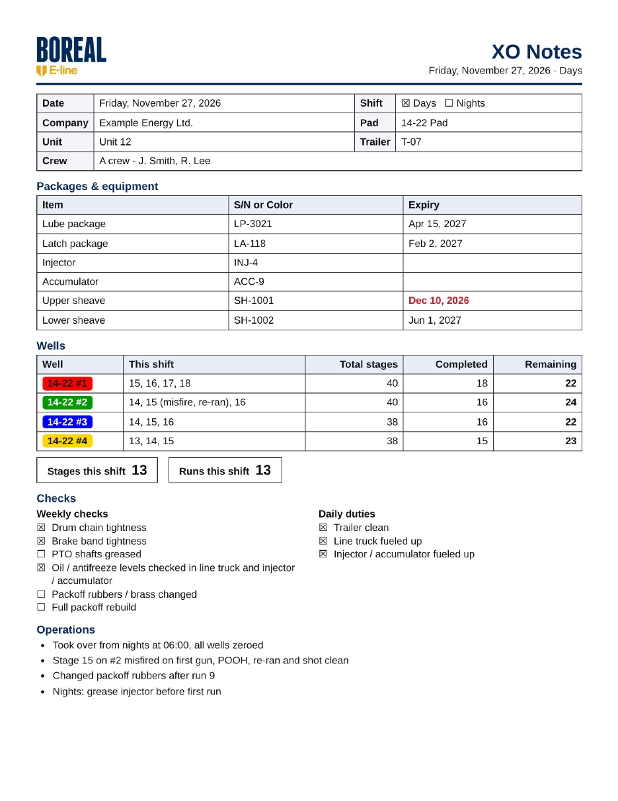
More menu
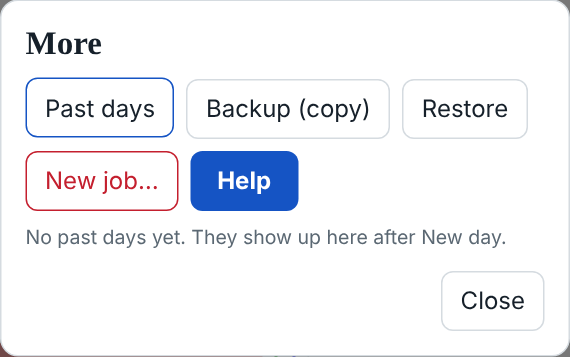
| Button | What it does |
|---|---|
| Past days | The stages from each day cleared with New day (last 60 days), by well. |
| Backup (copy) | Copies everything in White Board as text. Paste it into an email or a note to keep it safe. Do this before moving to a new PC or clearing the browser. |
| Restore | Paste a backup to load it. This replaces everything on this PC's board. |
| New job… | Starts a fresh job. See below. |
| Help | Opens this page. |
New job
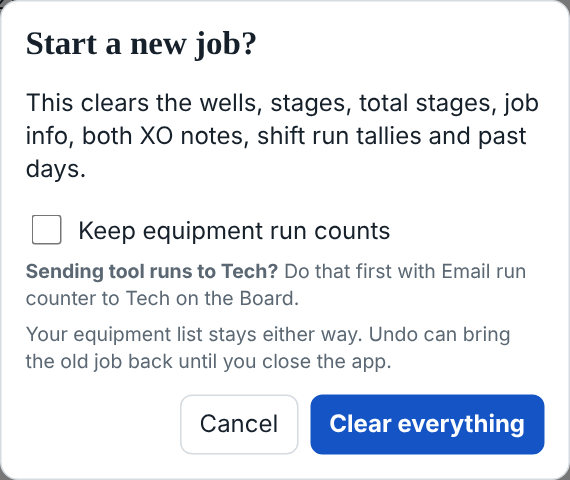
Clears the wells, stages, total stages, well colours, job info, S/Ns and expiry dates, both XO notes and past days. The equipment list and the check lists stay. Run counts go to 0 unless you tick Keep equipment run counts.
Shift routine
Start of shift
- Set the Days / Nights switch to your shift.
- On your XO tab, check the crew names.
- On the Board, make sure the right tools are ticked in the run counter.
During the shift
- Press +1 run each run, and + Stage on the well each stage.
- Tap a stage to flag anything unusual with a colour or note.
New ticket day (usually midnight)
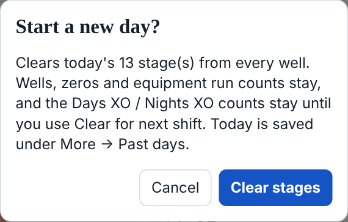
New day saves today's stages to Past days and clears them off the Board, ready for the next ticket. Wells, zeros, total stages, colours, run counts and the XO notes stay.
End of shift
- Finish the checks and operations notes on your XO tab.
- Share as email and/or Print / Save PDF.
- Clear for next shift on your XO tab.
- Switch Days / Nights for the next crew, or leave it for them to do.
End of job
- Email Tech on the Board.
- ⋯ More → Backup if you want a copy of the job.
- ⋯ More → New job…
Where things are saved, and tips
- Everything saves on its own, on this PC only. Other PCs and the office can't see it.
- Always open White Board the same way, from its installed icon. Opening it in a different browser shows an empty board.
- Clearing Edge's browsing data or site data erases the board. Do a Backup first.
- New PC? Backup on the old one, install on the new one, then Restore.
- No internet? It still works. Emails wait in your email app until there's a connection.
- Email button does nothing? Use Copy notes and paste into an email.
- "White Board updated" means a newer version loaded. Close and reopen to use it.